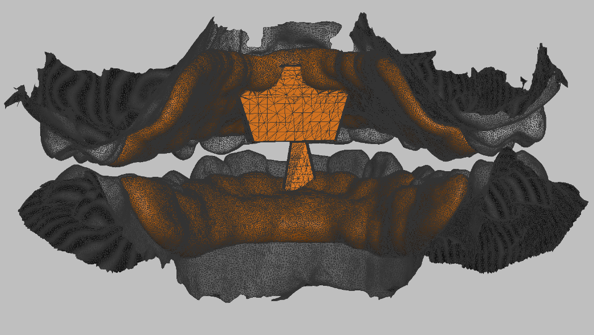
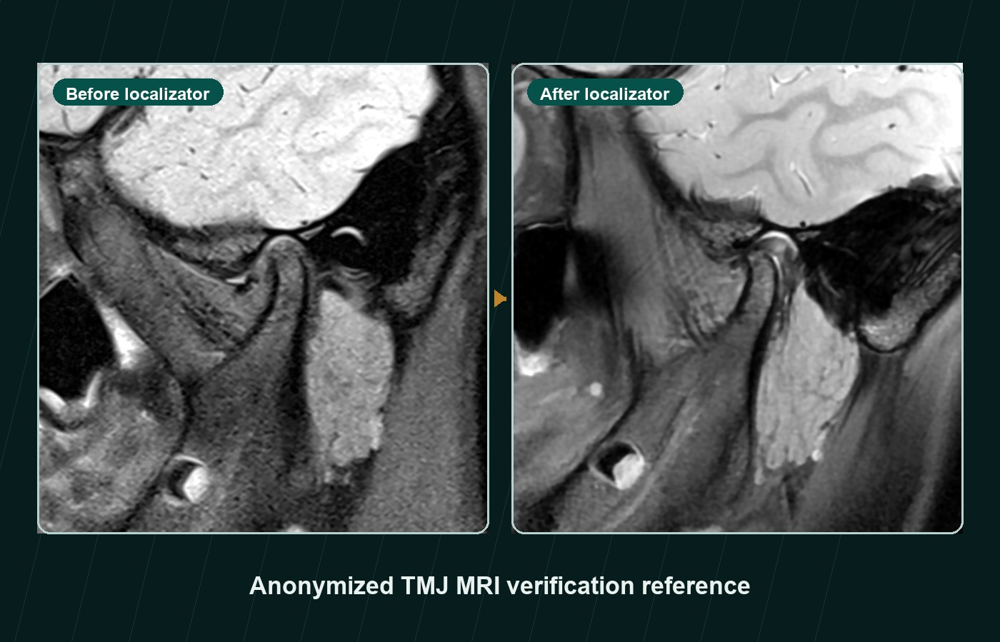
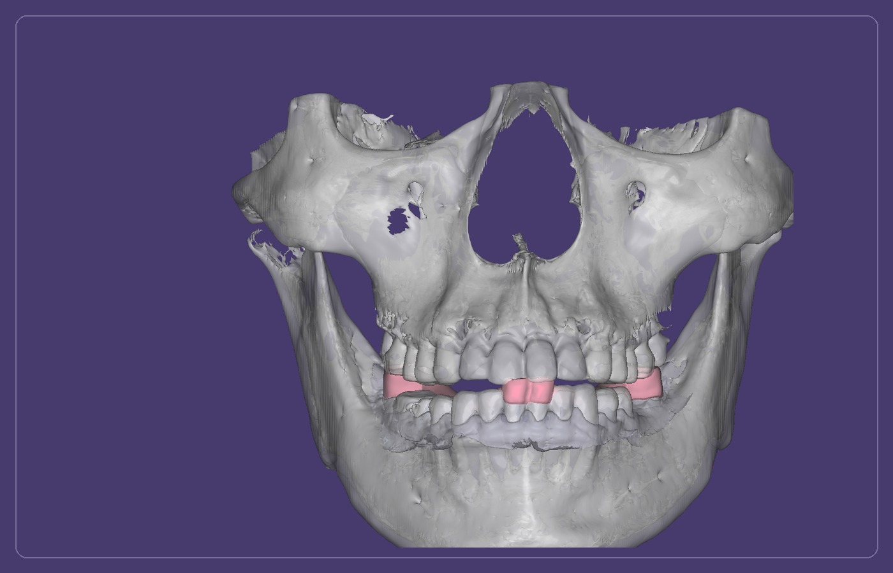

CAD restaurador fijo
Coronas unitarias, puentes, carillas, inlays, onlays, cofias y archivos CAD restauradores preparados para revisión técnica y producción.
Diseño dental digital para laboratorios y clínicas
Servicios CAD con precio publicado para trabajos digitales rutinarios, con soporte de planificación de alcance definido para rehabilitaciones complejas.
MW DenTech apoya a laboratorios dentales y clínicas digitalizadas que necesitan ayuda externa de diseño para corona y puente, estética, implantes, férulas, rehabilitación oclusal full-mouth y rehabilitación full-arch sobre implantes.
El soporte CAD principal se separa de los flujos estratégicos de rehabilitación, para que los casos rutinarios y las reconstrucciones por fases se definan con claridad desde el inicio.
Soporte CAD compacto y orientado a producción para casos en los que la posición clínica y la dirección del tratamiento ya están definidas.
Coronas unitarias, puentes, carillas, inlays, onlays, cofias y archivos CAD restauradores preparados para revisión técnica y producción.

Diseño de sonrisa, wax-up digital, morfología anterior, textura, simetría y flujos estéticos con soporte de SmileCloud.

Pilares personalizados, coronas sobre implante, restauraciones atornilladas, diseño de perfil de emergencia y soporte CAD restaurador sobre implantes.

CAD de guía para implante unitario con sitios adicionales valorados por alcance, además de diseño guiado de arcada parcial cuando el plan de implantes y el protocolo de casquillos están claros.

Férulas Michigan, férulas de estabilización, férulas nocturnas, desprogramadores y CAD rutinario de aparatos cuando la posición de mordida ya está prescrita.
Soporte estratégico de planificación por caso para tratamientos que necesitan secuenciación, verificación y coordinación de provisional a definitivo.
 AxisGuide
AxisGuide
Soporte de planificación informado por MRI/CBCT/STL para casos seleccionados de rehabilitación restauradora, ortodóncica y full-mouth sensibles a la ATM, liderados por el clínico.
Conocer AxisGuide Full-mouth
Full-mouth
Rehabilitación integral para dentición desgastada, modificación de VDO, corrección del plano oclusal, wax-up aditivo, diseño provisional y coordinación CAD restauradora final.
 Full-arch
Full-arch
Flujos All-on-X y dentición terminal, incluyendo planificación full-arch sobre implantes, diseño de guía quirúrgica, planificación de pines de fijación, provisional de carga inmediata, verificación y soporte para la prótesis full-arch final.

Hacemos explícitos los detalles prácticos antes de iniciar el CAD, para que su equipo sepa qué se entregará y cuándo podrá revisarlo.
Los registros dentales complejos son sensibles. Mantenemos separados el pago, los archivos clínicos y el alcance del proyecto para que laboratorios y clínicas colaboren sin exponer información innecesaria del paciente.
CaseHub centraliza la entrada estructurada de casos, selección dental, subida de archivos, seguimiento de estado, conversación del caso y archivos de entrega en un espacio privado. Está pensado para registros clínicos anonimizados o minimizados siempre que sea posible, y la beta es por invitación mientras MW DenTech valida el flujo con laboratorios y clínicas seleccionados.
Recoge código de caso, resumen de prescripción, dientes seleccionados, plazo, urgencia y primeros archivos antes de la revisión de alcance.
Mantiene preguntas del partner, notas de MW, entregas y feedback de revisión conectados a la misma referencia de caso.
El acceso se introduce selectivamente después de revisar el primer caso y acordar expectativas de transferencia de datos.
El trabajo de diseño rutinario está pensado para colaboración recurrente. La planificación avanzada se presupuesta primero para que la revisión de imagen, la secuenciación, la verificación y las fases provisionales se definan con el cuidado que requieren.
Estos ejemplos anonimizados muestran el tipo de registros, resultados de planificación y límites clínicos usados cuando un caso supera el CAD con precio publicado.




Los precios "desde" ayudan a probar trabajo CAD repetible. Los precios publicados en EUR son honorarios profesionales netos y no incluyen IVA salvo que se indique lo contrario. Los servicios con presupuesto previo se definen individualmente cuando la secuenciación, revisión de imagen o planificación provisional por fases afecta la carga de trabajo.
Nota sobre IVA: se aplica IVA español cuando corresponda, con tipo general actualmente del 21%. Los clientes B2B de la UE elegibles pueden facturarse con inversión del sujeto pasivo cuando se confirmen datos de IVA válidos; otros impuestos aplicables se gestionan según la ubicación del cliente y la situación de facturación.
Basado en la economía real del CAD dental. Los precios se refieren solo al diseño CAD y soporte de planificación; impresión, fabricación, componentes, envío, aranceles, IVA y otros impuestos no están incluidos salvo que se indiquen en el presupuesto escrito o en la factura. Los precios por volumen están disponibles después de comprobar volumen recurrente, calidad de archivos y patrones de revisión.
El CAD con precio publicado puede valorarse desde el menú tras revisar archivos. AxisGuide, full-mouth y full-arch se definen primero porque los registros, la secuenciación y los pasos de verificación determinan la carga real de trabajo.
Seleccione un servicio CAD con precio publicado o identifique el caso como AxisGuide, rehabilitación full-mouth o full-arch.
Revisamos calidad de archivos, bibliotecas, registros de mordida, imagen, método de producción y ruta de transferencia antes de programar el trabajo.
Los servicios CAD con precio publicado reciben instrucciones de pago y facturación tras confirmar alcance; los casos complejos reciben presupuesto escrito o solicitud de depósito.
Su equipo revisa los archivos CAD o de planificación antes de fabricar o avanzar a la siguiente fase clínica.
Ideal para trabajo repetible donde registros, posición de mordida, bibliotecas de implantes y método de producción ya están claros.
Valorado desde el menú neto publicado tras revisar archivos y confirmar alcance.
Solicitar presupuesto de menúIdeal para casos donde secuenciación, revisión de imagen, estrategia provisional o coordinación multidisciplinar afectan el alcance.
Definido individualmente antes de presupuesto escrito, depósito o instrucciones de pago por fases.
Enviar para presupuestoEnvíe escaneos intraorales, registros de mordida cuando sean relevantes, formato de salida, sistema CAD/CAM, material o método de producción y plazo solicitado.
Envíe escaneos, fotos, registros de mordida o relación mandibular, referencias provisionales o wax-up, objetivos VDO u oclusales y MRI/CBCT cuando estén incluidos en el alcance.
Envíe CBCT/DICOM, plan de implantes o posiciones propuestas, registros de scanbody o MUA, requisitos de fijación, objetivo de provisional inmediato y objetivo de prótesis final.
Envíe primero un caso representativo. Confirmamos si encaja en precio publicado o necesita presupuesto por alcance antes de iniciar el diseño.
Respuestas breves para laboratorios y clínicos antes de enviar el primer caso.
MW DenTech proporciona diseño CAD y soporte de planificación. Los precios son honorarios netos de CAD/diseño; impresión, fresado, componentes, envío, aranceles, IVA y otros impuestos no están incluidos salvo acuerdo separado reflejado en el presupuesto escrito o la factura.
Es CAD rutinario con una categoría de servicio clara, registros utilizables, posición de mordida prescrita, método de producción conocido y entregables previsibles.
Los casos complejos dependen de secuenciación, revisión de imagen, estrategia provisional, registros de verificación y coordinación interdisciplinar, por lo que el alcance debe confirmarse antes del precio.
Se incluye una revisión técnica cuando los registros e instrucciones originales no cambian. Nuevos registros, nueva posición de mordida, cambio en el plan de implantes, cambio de dirección terapéutica o entregables añadidos se tratan como actualización de alcance.
Use un enlace de carga acordado o un canal seguro. Retire información identificativa del paciente siempre que sea posible y mantenga las notas de pago libres de detalles clínicos.
AxisGuide está disponible para casos seleccionados de rehabilitación sensibles a la ATM y liderados por el clínico. Proporciona una vía estructurada informada por imagen para planificar, probar y verificar una posición mandibular propuesta antes de una reconstrucción oclusal por fases.